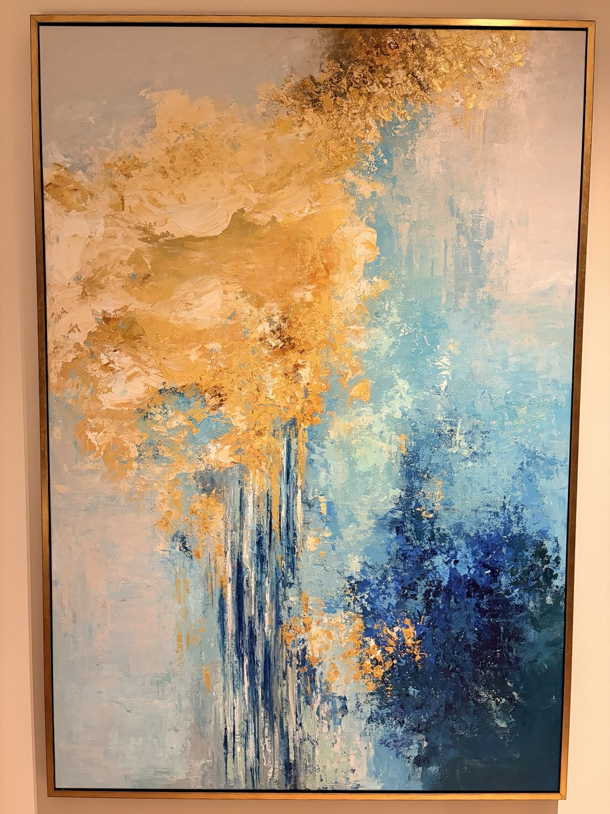
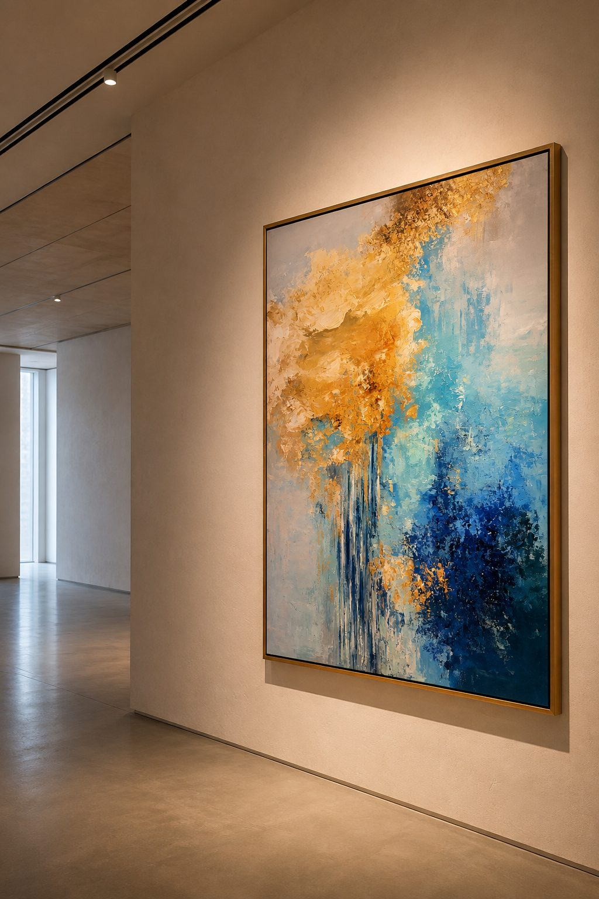
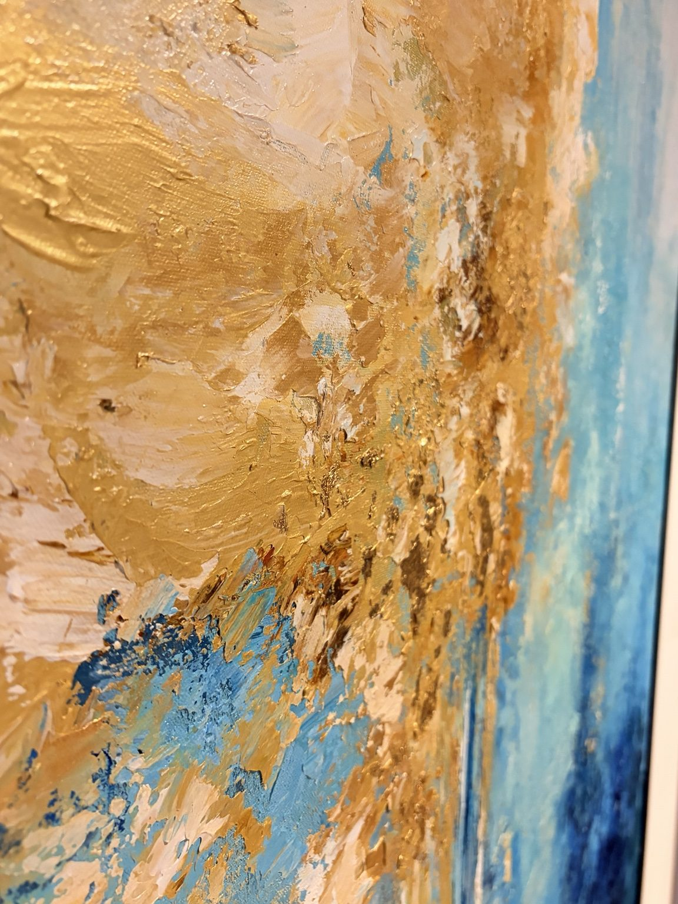
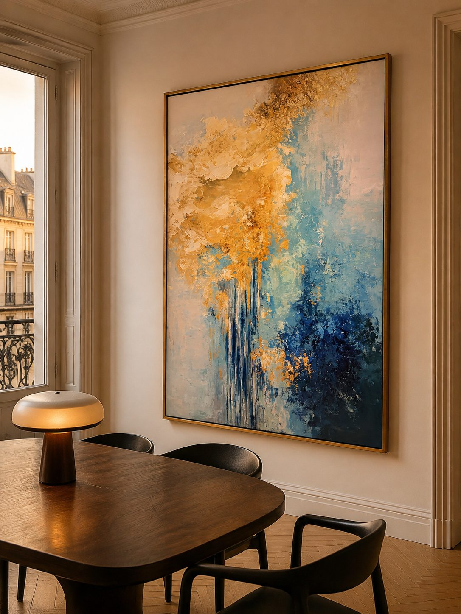
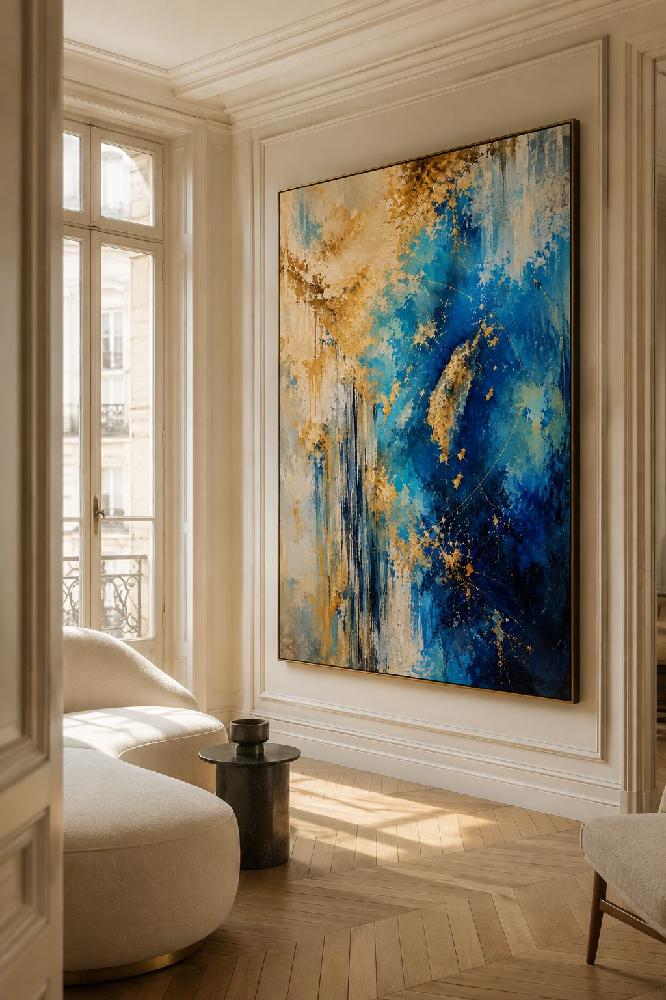
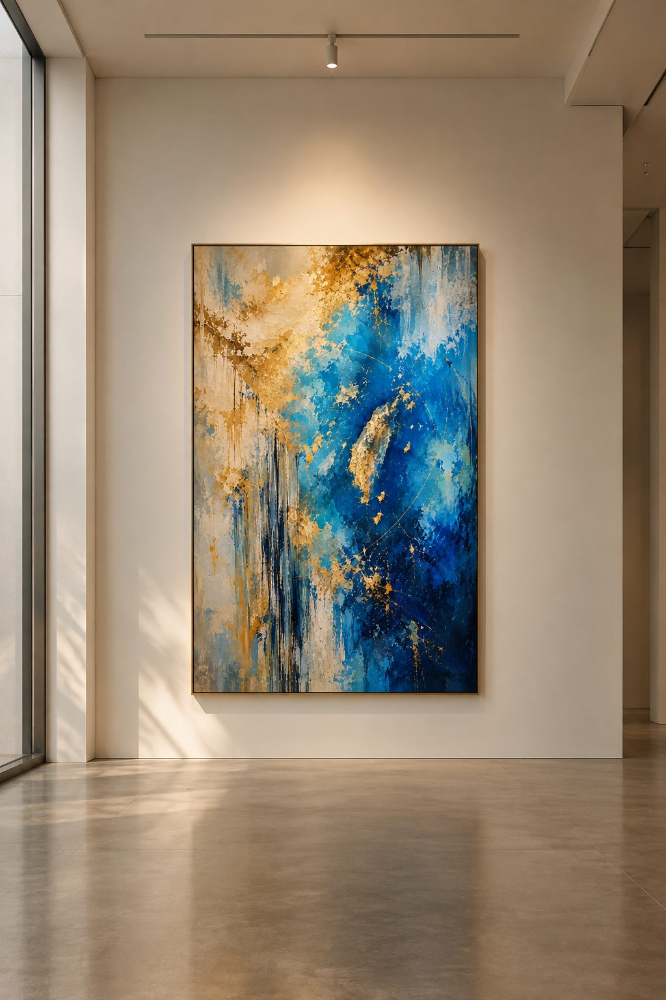

AvailableThe first collection
Golden
Tide I
A study in warmth, movement, and the quiet pull of light across water.
Enter the work ↘
01 / 04
GOLDEN TIDE
01 — Approach
Art that asks you
to stay a little longer.
FORME ART creates contemporary works that begin with an idea, a feeling, or a fleeting memory. Digital exploration and AI-assisted ideation open a field of possibilities; each final concept is directed and developed into a physical artwork with skilled production partners.
The aim is simple: to make an anchor for a room. A work that holds attention quietly, then keeps revealing something new.
02 — Collection
Golden Tide
Four meditations on light, depth, and movement.
Golden Tide II–IV are in development. The installation scenes throughout this site are digital visualizations, created to show each work in context.

03 — The work
Golden Tide I
Where turquoise meets deep blue and gold, a shifting field of light begins to emerge.
- Status
- Available for acquisition
- Collection
- Golden Tide, 01 / 04
- Price
- €10,000
- Details
- Available upon request
04 — In context
Art changes
the room around it.
Four imagined settings for the Golden Tide collection: intimate, architectural, and made for looking twice.



All interiors and museum scenes are visualizations for presentation purposes; they do not represent past exhibitions or installations.
05 — Acquisition
Bring Golden Tide
into your space.
For availability, artwork details, or a private viewing inquiry, get in touch directly.
hello@artist-studio.com ↗